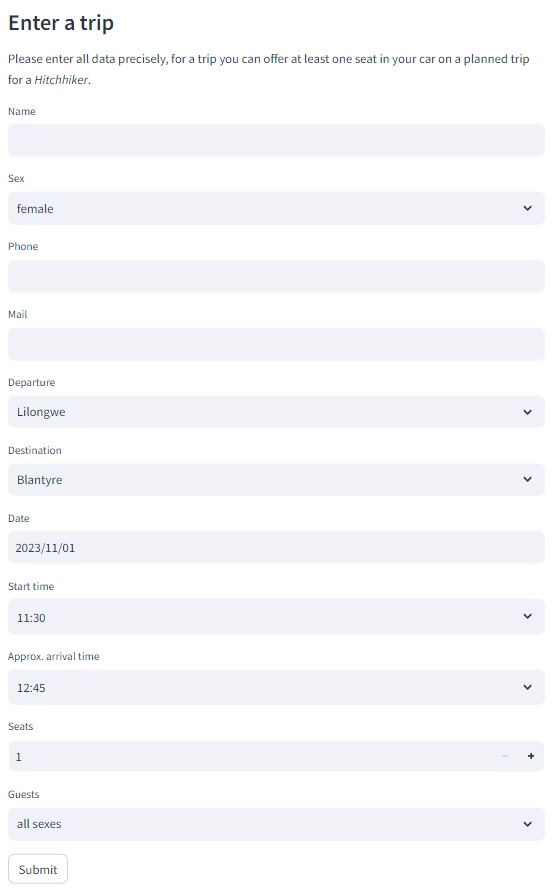

The Driving menu let's you promote seats that you offer on a planned trip. Please just enter a trip, if the chance of success is quite high to prevent bad experiences for the users of this App.
Under the menu Driving you can find the following input fields:
Press the Submit button to write your trip to the database so that other users can find it.

You can select out of following cites:
Lilongwe, Balaka, Blantyre, Chikhwawa, Chitipa, Dedza, Dowa, Karonga, Kasungu, Machinga, Mangochi, Mchinji, MonkeyBay, Mulanje, Mwanza, Mzimba, Mzuzu, Neno, NkahataBay, Nkhotakota, Nsanje, Ntcheu, Ntchisi, Phalombe, Rumphi, Salima, Thyolo, Zomba.
This offers distance calculation for your trip and also let the planner find matching trips, even if your starting and end points are not the same as the offered trip (if your Departure and Destination is on the route).
If your departure or destination is not in this list, please choose the cities quite next to it as departure / destination.
Your offering results in 10 points which will be added under your name to the Highscore list. Be aware that your name needs to 100% match, if it is not your first offering to be accumulated to the same person on the Highscore list.